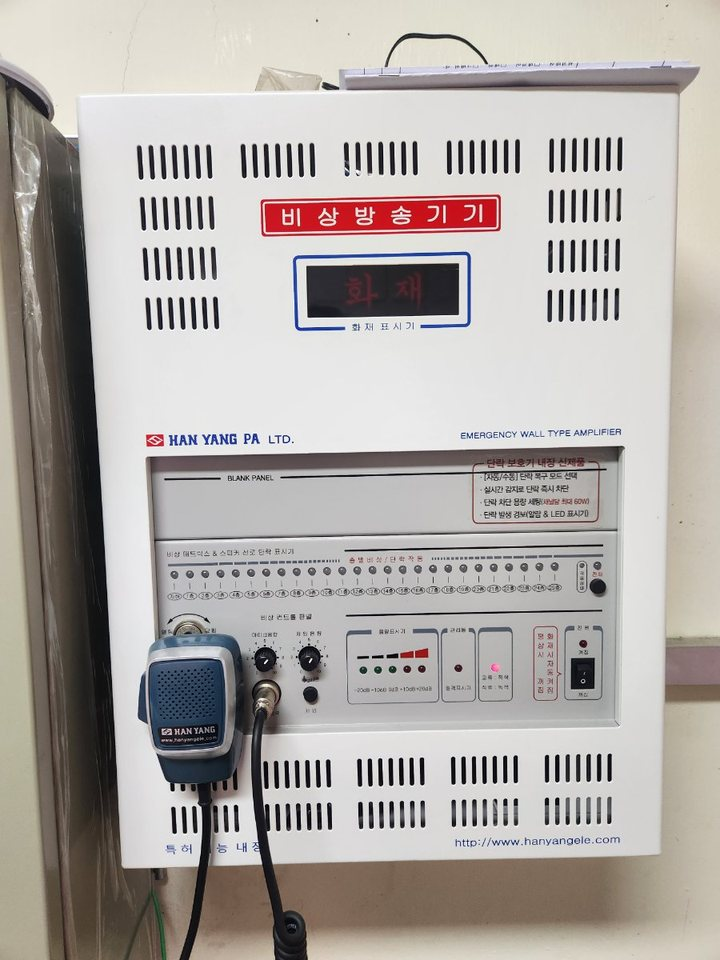

아래 안내는 원인 후보입니다. 임의 분해·배선 변경 대신, 발생 구역과 장비 표시 상태를 기록해 주세요.
Emergency broadcast & audio평소엔 안내방송.
평소엔 안내방송.
비상시엔 생명선.
안 들리는 방송, 반복되는 잡음, 작동하지 않는 화재 연동.
전체 교체를 결정하기 전, 고장 원인부터 확인하세요.
비상방송 · 앰프 · 스피커 · 방송선로 · 화재수신기 연동
PUBLIC ADDRESS / EMERGENCY SYSTEM
SYSTEM READY
FIRE LINK : ON
FIRE LINK : ON
01 · 02 · 03 · 04
BACKUP POWER
소리만 확인하지 않습니다.
화재 신호부터 대피 방송까지.
설비 구성 이해를 위한 개념 일러스트화재 신호부터 대피 방송까지.
01원인부터 찾는 진단
02부분 수리 가능 여부 검토
03수리 후 계통 연동 확인
01 / Find your problem우리 건물도
우리 건물도
이런 증상인가요?
증상을 선택하면 점검할 계통과 상담에 필요한 정보를 확인할 수 있습니다. 고장 부품은 현장 진단 후 판단합니다.
02 / Service scope비상방송부터 구내 음향까지,
비상방송부터 구내 음향까지,
문제가 있는 계통을 찾습니다.
비상방송은 안전을 위한 자동 연동을,
일반 음향은 사용 환경에 맞는 전달력을 중심으로 살펴봅니다.
화재 연동 · 비상방송
수신반 화재 신호가 방송장비로 전달되는지, 사이렌과 대피 음원이 송출되는지 확인합니다. 평소 방송이 된다는 이유만으로 비상방송까지 정상인 것은 아닙니다.
수신기 연동비상 제어부자동 음원방송 우선 전환
앰프 · 방송 랙
전원 불량, 출력 저하, 보호 동작, 장비 간 신호 전달 문제를 구분합니다. 장비 노후도와 부품 수급을 함께 확인해 수리 또는 교체 범위를 검토합니다.
증폭기전원부제어기판장비 연결
방송선로 · 스피커 · 감쇄기
한 층만 안 들리거나 특정 구역에서 잡음이 발생한다면, 선로와 말단 장치도 확인해야 합니다. 단선·단락 및 음량조절기 배선 상태를 점검 범위에 포함합니다.
구역별 선로스피커음량조절기단락 보호
안내방송 · 구내 음향
마이크 음성이 작거나 공간별 음량이 다른 경우, 입력 장치·앰프 설정·스피커 배치를 함께 살펴봅니다. 강의실·매장 등 일반 음향의 설치·개선 가능 범위는 상담 시 확인합니다.
관리실 안내방송마이크 입력실내 스피커음량 균형
비상방송설비와 공용하는 음향장비는 화재 시 비상방송 전환 기능까지 고려해야 합니다. 현장 구성과 장비 사양에 따라 작업 범위가 달라집니다.
03 / Understand the system방송은 하나의 장비가 아닌,
방송은 하나의 장비가 아닌,
연결된 시스템입니다.
앰프를 바꿔도 원인이 선로에 있으면 같은 문제가 남을 수 있습니다.
신호가 시작되는 곳부터 소리가 전달되는 곳까지 순서대로 확인합니다.
01 / SIGNAL
화재수신기
화재 신호 발생·전달
연동 접점과 연결 상태
02 / CONTROL
비상 제어 · 음원
비상방송 모드 전환
사이렌·대피 안내 음원
03 / AMPLIFY
앰프 · 구역 선택
음성 신호 증폭
필요한 구역으로 출력
04 / DELIVERY
선로 · 스피커
각 층·구역으로 전달
현장에서 실제 청취
일반방송의 마이크 입력과 화재 시 자동방송은 기동 경로가 다를 수 있습니다. 두 기능을 구분해 확인하는 것이 핵심입니다.
DATA / Failure causes
현장 수리 기록으로 본
현장 수리 기록으로 본
고장 원인 TOP 8
위쪽일수록 자주 고장 나고 먼저 점검해야 합니다. 원인을 좁히면 통째 교체 없이 해결되는 경우가 많습니다.
| 순위 | 고장 원인 | 세부 원인 | 주요 증상 | 발생 빈도 | 점검 우선도 |
|---|---|---|---|---|---|
| 1 | 전원부 이상 | SMPS 노후, 콘덴서 열화, 접지 불량, 전원선 단선 | 전원 불가, 재부팅, 잡음 | 매우 높음 | ★★★★★ |
| 2 | 내부 부품 노후 | 전해콘덴서 팽창, 릴레이 접점 불량, 냉땜 | 음질 저하, 간헐 동작 | 높음 | ★★★★★ |
| 3 | 스피커·배선 문제 | 스피커 유닛 소손, 배선 단선·합선 | 특정 구역 무음, 소리 찢어짐 | 높음 | ★★★★★ |
| 4 | 증폭부(앰프) 고장 | 출력 트랜지스터 손상, 과부하, 방열 불량 | 출력 저하, 보호회로 작동 | 중간 | ★★★★★ |
| 5 | 제어부·메인보드 | MCU 오류, 메모리 손상, 펌웨어 이상 | 버튼 무응답, 자동방송 실패 | 중간 | ★★★★★ |
| 6 | 마이크·입력장치 | 마이크 수명, 케이블 접촉불량 | 음량 작음, 하울링 | 보통 | ★★★★★ |
| 7 | 환경 요인 | 습기, 먼지, 고온, 결로 | 오동작, 부식 | 보통 | ★★★★★ |
| 8 | 외부 요인(낙뢰) | 낙뢰 유입, 통신선 방해 | 보드 전소, 포트 파손 | 낮음 | ★★★★★ |
04 / Repair or replace전체 교체 전,
전체 교체 전,
수리할 수 있는지부터.
비용을 줄이는 출발점은 정확한 범위 확인입니다. 수리 가능성과 수리 후 기능 회복 여부를 함께 판단합니다.
| 판단 기준 | 부분 수리 검토 | 교체 검토 |
|---|---|---|
| 고장 범위 | 특정 부품·선로 등 원인이 국한된 경우 | 여러 계통에 문제가 함께 있는 경우 |
| 부품 수급 | 호환 부품 확보와 보수가 가능한 경우 | 단종·부품 수급 곤란 등으로 보수가 어려운 경우 |
| 기능 회복 | 수리 후 필요한 기능을 확인할 수 있는 경우 | 반복 고장 또는 필요한 기능 확보가 어려운 경우 |
위 내용은 일반적인 상담 판단 기준입니다. 실제 수리·교체 결정은 현장 상태와 적용 기준을 확인한 후 안내합니다.
05 / Cost guide비용이 걱정된다면,
비용이 걱정된다면,
현장 조건부터 확인하세요.
공식 안내의 무료출장·수리비 예시를 확인하고 상담하세요. 건물 구성과 고장 범위에 따라 실제 견적은 달라집니다.
출장 조건 · 예상 비용 문의 ↗공식 공지에 안내된 비용 예시
30만 원 내외
수신기 2개 연동 기준의 수리 안내 예시
모든 현장에 적용되는 정액 상품은 아닙니다.
- 공식 공지에는 무료출장 진단 이벤트가 안내되어 있습니다.
- 진행 여부, 대상 지역과 적용 조건은 예약 전 확인해 주세요.
- 고장 부위·선로 길이·부품 교체·추가 공사에 따라 비용이 달라질 수 있습니다.
- 부가세 포함 여부와 진단 후 수리를 진행하지 않을 때의 비용도 상담 시 확인하세요.
06 / Safety essentials수리의 끝은 ‘소리 남’이 아니라,
CHECK / 01 CHECK / 02 CHECK / 03
수리의 끝은 ‘소리 남’이 아니라,
필요할 때 전달되는지 확인하는 것.
비상방송설비의 화재안전성능기준(NFPC 202)을 함께 확인해야 하는 이유입니다.
화재 신호에 자동으로 반응하나요?
수동 마이크 시험과 자동 연동 시험을 구분합니다. 화재 신호를 받은 뒤 비상방송이 개시되는 기능을 확인해야 합니다.
일반방송보다 우선하나요?
다른 방송과 설비를 공용한다면 화재 시 일반방송을 차단하고 비상방송이 전달되는 구조인지 살펴봅니다.
한 층의 고장이 번지지 않나요?
한 층의 스피커·배선에 단락이나 단선이 발생해도 다른 층의 화재 통보에 지장이 없도록 하는 기준을 확인합니다.
적용 기준은 건축허가·착공 시점과 설비 조건에 따라 확인이 필요합니다. 이 페이지는 적합 판정서나 법정점검을 대신하지 않습니다. 국가법령정보센터 NFPC 202 ↗
07 / Field situations고장 상황이 다르면,
고장 상황이 다르면,
확인할 곳도 달라집니다.
공식 안내의 고장 증상을 바탕으로 정리한 진단 시나리오입니다. 특정 현장의 시공 실적이나 완료 사례를 의미하지 않습니다.
안내방송은 되는데
화재방송은 무반응
- 구분할 문제
- 방송 출력 문제인지, 화재 신호 전달 문제인지 구분
- 확인할 계통
- 수신기 접점 → 연동 배선 → 비상 제어부 → 음원
- 작업 후 확인
- 화재 연동과 실제 대피 안내 송출
특정 층 방송 때만
소리가 끊기는 상황
- 구분할 문제
- 공통 장비와 해당 층 선로·말단 장치의 문제 구분
- 확인할 계통
- 구역 선택부 → 해당 층 배선 → 감쇄기·스피커
- 작업 후 확인
- 해당 구역 및 다른 층의 방송 상태
사이렌은 울리는데
대피 음성이 안 나옴
- 구분할 문제
- 사이렌과 음성 안내가 이어지는 단계에서 문제 확인
- 확인할 계통
- 자동 음원 → 재생 제어 → 입력·출력 연결
- 작업 후 확인
- 사이렌 이후 대피 안내 음성의 연속 송출
REAL CASE / 신반포아파트
현장 비상방송 앰프 랙  달인
달인
실제로 이렇게 고쳤습니다
공식 안내에 소개된 경광순 달인의 신반포아파트 비상방송설비 점검·보수 기록입니다.

진단
전원부 노후 — SMPS 내부 콘덴서 열화, 출력 불안정, 비상방송 시 음압 부족
스피커 라인 불량 — 일부 동 배선 접촉 불량, 특정 층 송출 안 됨
수리
전원부 콘덴서 선제 교체 · 증폭부 출력 소자·방열 개선 · 문제 구역 스피커 라인 재정비 · 우선방송 릴레이 교체 → 정전 가정 예비전원 시험과 화재 신호 연동 자동방송 시험까지
결과
전 구역 방송 정상 송출 · 비상 시 우선방송 즉시 작동 · 음성 명료도 개선 · 소방 법정점검 기준 충족
“이전에는 방송이 나와도 긴가민가 불안했는데, 이제는 소방서 점검에도 자신 있게 설명할 수 있는 상태가 되었습니다.”— 관리사무소 관계자
달인이 서비스의 담당 달인 · 비상방송·앰프
경광순 달인경력 40년
“딱 보면 압니다. 바로 핵심 문제를 파악합니다.”
- 방송장비 수리·보수 40년
- 아파트·빌딩·교육기관·군부대
- 브랜드·연식·송출방식 무관 수리
- 전원부·앰프·스피커 라인 복합 고장 진단
- 화재 연동 자동·우선 방송 기능 복구
- 통째 교체 대신 부품 단위 수리로 비용 절감
대표 해결 사례 · 신반포아파트 비상방송설비 보수
전원부 콘덴서 선제 교체, 출력 소자·방열 개선, 문제 구역 스피커 라인 재정비 후 정전·화재 가정 시험까지 완료. “이제는 소방서 점검에도 자신 있게 설명할 수 있다”는 관리사무소 평가.
08 / Working process상담부터 정상화 확인까지,
상담부터 정상화 확인까지,
이 순서로 진행합니다.
증상 · 자료 상담
발생 시점, 안 들리는 구역, 일반방송과 비상방송의 차이를 확인합니다. 현장 지역과 방문 조건을 함께 협의합니다.
현장 진단 · 범위 안내
장비·신호·선로를 구분해 원인을 확인하고 수리 가능 여부와 교체가 필요한 범위를 설명합니다.
견적 확인 · 작업 협의
부품과 공임, 추가 작업 조건, 일정 및 방송 중단 구간을 확인한 후 진행 범위를 결정합니다.
수리 · 연동 확인
협의한 범위의 수리 후 일반방송과 비상 연동을 구분해 시험합니다. 시험 방송은 현장 관리자와 사전 협의합니다.
결과 · 관리사항 확인
조치 내역, 남은 문제, 재발 시 확인사항을 점검합니다. 사진·작업내역서 등 필요한 자료와 보증 조건은 작업 전 요청해 주세요.
09 / Before you call이 세 가지가 있으면
이 세 가지가 있으면
상담이 빨라집니다.
장비를 분해하거나 설정을 바꿀 필요는 없습니다.
눈으로 확인할 수 있는 정보만 준비해 주세요.
① 방송장비 전체 사진 + 모델명
랙 전체 구성과 앰프·제어부의 제품 라벨을 각각 촬영해 주세요. 경고등이 있다면 그 상태도 남겨 주세요.
② 증상 + 발생 범위
언제부터, 어디에서, 어떤 방송이 안 되는지 알려주세요. 특정 층인지 전체 건물인지가 중요한 단서입니다.
③ 점검 지적사항 + 방문 정보
점검 결과서의 해당 문구, 현장 주소, 담당자 연락처와 출입 가능 시간을 준비해 주세요. 자료 전송 방법은 전화로 안내받으세요.
10 / Questions & answers
관리자님이 자주 묻는 질문.
장비를 전부 교체해야 해결되는 건가요?
항상 그런 것은 아닙니다. 고장 원인이 일부 부품이나 선로에 한정되어 있으면 부분 수리를 검토할 수 있습니다. 다만 부품 단종, 반복 고장, 필요한 기능 확보가 어려운 경우에는 교체를 함께 검토해야 합니다.
일반 안내방송이 나오면 비상방송도 정상 아닌가요?
일반 마이크 입력과 화재 시 자동 기동은 경로가 다를 수 있습니다. 일반방송이 들려도 수신기 연동이나 대피 음원에 문제가 있을 수 있어 기능을 나눠 확인해야 합니다.
무료출장과 30만 원 내외 안내는 모든 현장에 적용되나요?
공식 공지의 이벤트 및 특정 연동 조건에 대한 비용 예시입니다. 현재 진행 여부, 방문 지역, 고장 범위에 따라 달라질 수 있습니다. 예약할 때 진단비, 출장비, 부품비, 부가세 및 수리 미진행 시 비용까지 확인해 주세요.
점검에서 지적받은 문구만 있어도 상담이 되나요?
해당 문구와 방송장비 전체 사진을 준비하면 초기 상담에 도움이 됩니다. 지적사항 해소를 위한 작업 범위, 완료 확인 자료 및 재확인 방법은 현장 담당자와 협의합니다.
수리 당일에 모두 끝낼 수 있나요?
고장 위치와 부품 확보, 선로 접근 가능 여부에 따라 달라집니다. 현장 진단 후 당일 조치 가능 범위와 추가 방문 필요 여부를 확인해야 합니다. 확정된 일정은 상담 후 안내받으세요.
방송을 중단하지 않고 작업할 수 있나요?
계통과 고장 범위에 따라 일부 또는 전체 방송의 중단이 필요할 수 있습니다. 현장 관리자와 작업 시간, 영향 구역, 시험 방송 안내를 먼저 협의해야 합니다.
매장·강의실의 일반 음향 문제도 문의할 수 있나요?
마이크 입력, 앰프, 스피커와 음량 문제를 중심으로 상담할 수 있습니다. 공간 규모, 사용 목적, 보유 장비를 알려주시면 대응 가능 범위를 확인합니다. 전문 공연·무대 음향 등 별도 설계가 필요한 작업은 먼저 협의해 주세요.
수리 후 보증이나 작업 결과 자료도 받을 수 있나요?
부품과 작업 종류에 따라 조건이 다릅니다. 보증기간, 제외 항목, 재방문 비용, 작업내역서와 사진 제공 여부를 견적 단계에서 확인해 주세요. 법정점검이나 별도의 적합 확인이 필요한지도 함께 협의하세요.
11 / Talk to a specialist교체 견적을 받기 전,
교체 견적을 받기 전,
고장부터 이야기해 주세요.
비상방송 · 음향 상담
공식 안내 담당 전문가: 경광순
상담 접수: 달인명인 · 주식회사 점검24
현장 사진은 상담 시 안내받은 경로로 보내주세요.
방문 가능 지역·출장 조건·일정은 접수 시 확인합니다.
이메일: ii21@naver.com
방문 가능 지역·출장 조건·일정은 접수 시 확인합니다.
이메일: ii21@naver.com